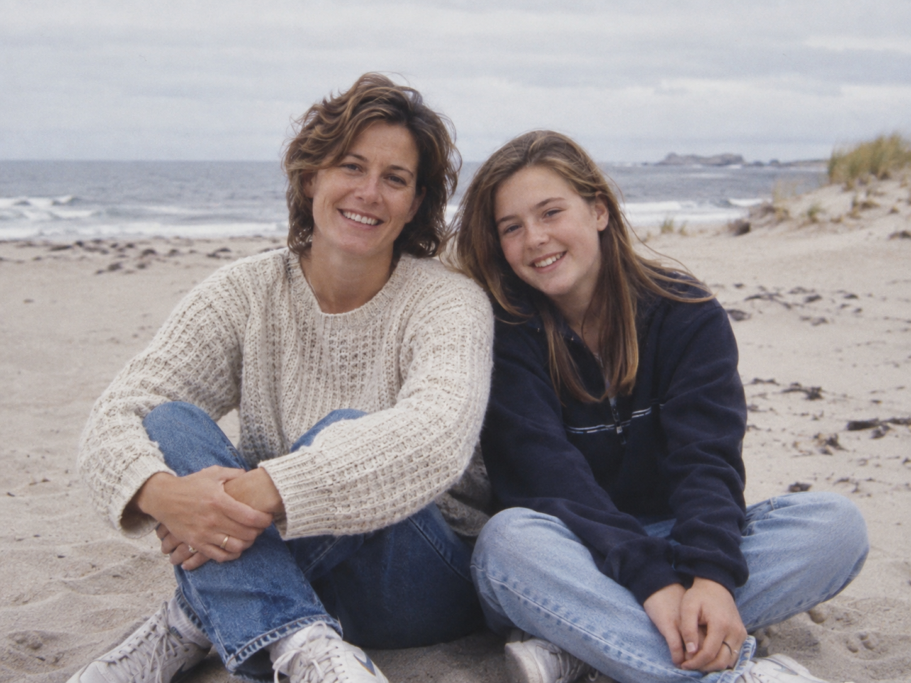

Familiar memories.
Room to speak.
One photograph. One thought. Enough time to find her own words.
A calm visual identity for memory participation and family connection.
A compact connected path for family and brand surfaces.
For one-color reproduction. The app keeps its clay path on every screen.
The same identity at a larger scale. Never patient navigation.
Quiet color. Clear words.
Paper and ink do most of the work. Sage groups. Clay marks one current position.
#FAFAF7#242C28#535E57#F0F2EC#E9ECE6#BDC5BD#C6CEC5#354F43#98513FOn Paper: Ink 13.70:1 · Secondary 6.46:1
Focus 8.54:1 · Clay 5.60:1
Pair color with a label, shape, or position. Dividers may be quiet; control boundaries must stay clear.
Atkinson Hyperlegible Next
Ordinary spacing. An unhurried rhythm.
- Patient captions
- 32 / 40px
- Patient questions
- 28px or larger
- Caregiver body
- 20 / 24px
- Caregiver detail
- 17–18px
Keep sentences short and left aligned. Give text room to grow. Never shrink a question to fit a photograph.
Self-hosted variable font. SIL Open Font License included. Full roles and dark colors: BRAND_BOOK.md.
One familiar thing at a time.
The patient view stays still, spacious, and easy to leave.
AI assistant set up by Maya

Would you like to talk about Cape May?
Layout example. Fictional photo; not a live call.
Make the next step obvious.
One photograph. One caption. Keep the name, question, and controls in stable positions.
Wait without visual noise.
No typing dots, countdowns, or pulsing logos. Use a brief crossfade when content changes.
Choice stays equal.
Ask about remembering and sharing separately. Read the exact words back. Make No as easy as Yes.
A quiet record. A reason to call.
Family sees what happened in calls, with her privacy intact.
Same topic · up to 8 recent calls. Illustrative records.
Show counts, never a score.
Count unaided calls for each topic. Show the denominator. Never label her abilities.
Keep context attributed.
Sources begin unselected. Reveal metadata on request. Attribute family descriptions.
Keep people connected.
Keep “Suggest a conversation” nearby. Encourage family to call her directly.
Bring this direction into Cursor.
Use @BRAND_BOOK.md, @DESIGN.md, and @AGENTS.md. Apply this visual system to the existing frontend. Preserve behavior, privacy, and separate remember/share choices. Find the copy-ready prompt in BRAND_BOOK.md.
Verify phone and laptop layouts, large text, keyboard focus, dark preference, and reduced motion. Design targets are not accessibility certification.